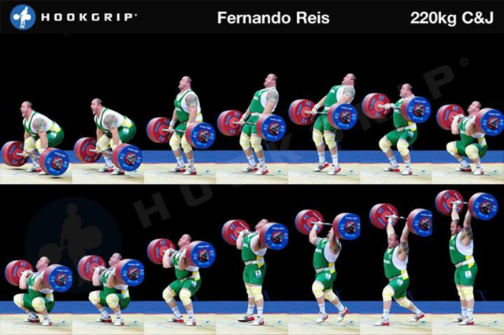

Clean and Jerk
The clean and jerk is the second competition lift in olympic weightlifting. This lift consists of the clean, the movement in which the bar is lifted and caught in a front rack position, and the jerk. The jerk is a very technically complicated lift and involves driving the bar overhead and catching it in a locked arm position. The phases include:
- The Setup
This is the phase in which the athlete starts the lift. The setup position will vary from athlete to athlete based on both preference, and anatomy. This setup will generally be narrower than that of the snatch.
- The Pull
This step is actually divided in 3 phases known as the first, second, and third pull. In this step, the athlete will pull the bar up maintaing a vertical bar path. Once the bar is above the knees, the bar is violently accelerated through the extension of the ankles, knees, and hips leading to the athlete being on their toes. This phenomenon is known as triple extension. The athlete will pull themselves underneath the bar and catch it in a front rack position when the bar has reached its peak potential height.
- The Stand
The athlete must now stand into a front squat position once the bar has been caught.
- Dip and Drive
To drive the bar overhead, the athlete must perform a dip, followed by a quick drive in the knees to force the bar overhead. This is a shallow and very violent movement; the drive is meant to redirect the force into the bar, so it is critical that the athlete drives through the heels in this phase.
- The Receive
Once the barbell has been driven up, it will become temporarily weightless. At this point,l the athlete must agressively drop under the bar into a split jerk receiving position.
- The Lockout
The final phase involves the athlete keeping the bar still until the lower command is given by the judges.
